14 Means and Markov’s Inequality
$$ \newcommand{X}{} \newcommand{Y}{} % A hex digit after # inside a macro body is eaten by build-time expansion, so digit-leading hexes spell # via .
$$
We’ve been working with these distributions, and we’ve been talking about their sampling distributions. And we’ve been talking about them having a center. This is what we mean by that.
We meant an expected value. We have already been using objects such as Y_i, \sum_iY_i, and \hat\theta=n^{-1}\sum_iY_i. We will now call them random variables. The name is new; the objects are not.
The expectation of a random variable is its probability-weighted average, \mathop{\mathrm{E}}[X]=\sum_x \textcolor{#EF476F}{x}\textcolor{#118AB2}{P(X=x)}. That means summing, over the x axis, the product of the x, the position along the x axis and the P(X=x), the bar height at that position. Histograms are for counting dots. The expectation is the average of infinitely many dots.
Why did we like this? Because it’s right. The blue line is on top of the green line. The reason we center here is that it works. The center is exactly what we wanted to estimate. We call estimators like this unbiased, and we’ll see why these are unbiased and how to know that things are unbiased.
The motivation for using the expectation doesn’t have to be complicated at all. It can just be that you want to center the thing on the thing you want to estimate. We’re always talking about how to calibrate effectively so that we contain the center of the distribution a certain frequency of the time, and that’s only useful if the center of the distribution is where you want it to be.
Today we’re going to talk about what’s so easy about the expectation, and what we can do with it alone.
To see what’s easy, we’re going to revisit something hard: how we calculated these distributions in the first place.
How we got here
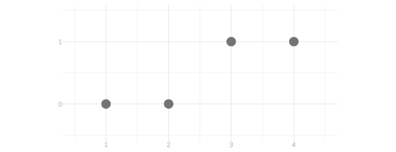
We’re going to draw a sample of size 2 from the population above. Here is the distribution of the total of the two responses. Throughout, sampling with replacement is on the left and without replacement on the right.
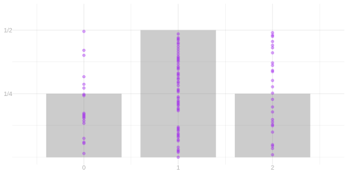
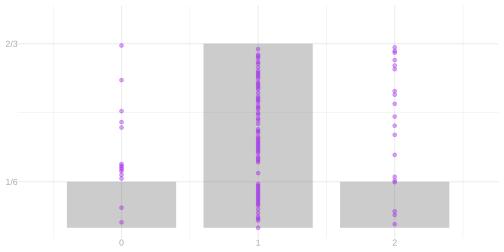
Two calls
Every call sequence is equally likely. That isn’t an assumption. It follows from how we sample. With replacement, each call is an independent uniform pick, so all sixteen ordered pairs of calls are equally likely. Without replacement, the calls are a shuffle, so every ordered pair of distinct people is equally likely, and a repeat is impossible.
Let J_i identify the person selected on call i, and let Y_i be that person’s response. The population is fixed. The calls and the responses are random variables, because they depend on whom we select.
In each grid, the row is the first person called and the column is the second. A cell is a call sequence. Its top line is the probability of that call sequence, and the digits underneath are the responses in call order. Cells with the same response sequence have the same color.
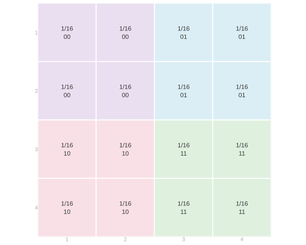
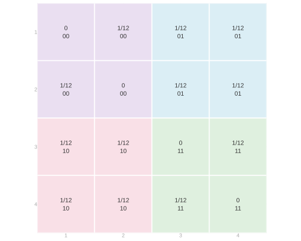
Collect the cells by color. That gives the distribution of the pair of responses, on a 2 by 2 grid with the first response down the rows and the second across the columns.
Collect those cells by total. The two off-diagonal cells both total one, so adding them gives the middle bar of the distribution we started with. The two diagonal cells give the outer bars.
The coloring is the same in both grids. What changed between them is the probabilities in the cells you’re coloring.
Changing the population
Now change person 3’s response from one to zero, so the population is 0,0,0,1.
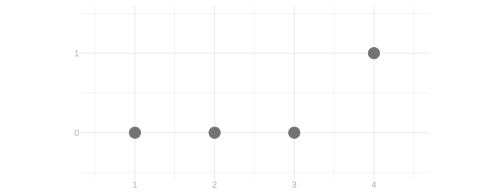
This time the probabilities in the cells stay where they were. What changed is which cells get which color.


Collect the cells by color for the response grid, then collect those by total for the distribution of the total.
Three calls
You can do it. We include it here. But the whole point is that you don’t want to do this. Go ahead and skim.
NoteThe three-call calculation
For three calls a cell has to identify three people. Each of the four layers below fixes the person selected on call 3. Within a layer, rows are the first call and columns the second, and the three digits in a cell are the three responses in call order. We stay with the population 0,0,0,1. The layers shown are with replacement: there are 4^3=64 call sequences, each with probability 1/64. For without replacement, read the same layers with every cell that repeats a person struck out, which leaves six cells in each layer and 4\cdot3\cdot2=24 in all, each with probability 1/24.


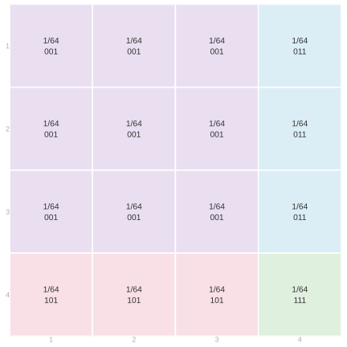
Collect the cells by color across the layers. With replacement, (0,0,0) comes from every ordered triple of zero-responders, which is 3\cdot3\cdot3=27 of the 64 call sequences. A sequence with exactly one 1 uses person 4 on that one call and a zero-responder on each of the others, which is 3\cdot3=9 call sequences. Two ones leave one call free for a zero-responder, which is 3 call sequences. And (1,1,1) is the single call sequence (4,4,4). Without replacement, person 4 is the only one-responder, so no sequence with two or three ones is possible. (0,0,0) comes from 3\cdot2\cdot1=6 of the 24 call sequences, and each sequence with exactly one 1 comes from 3\cdot2=6.
| Y_1 | Y_2 | Y_3 | With replacement | Without replacement |
|---|---|---|---|---|
| 0 | 0 | 0 | 27/64 | 6/24 |
| 0 | 0 | 1 | 9/64 | 6/24 |
| 0 | 1 | 0 | 9/64 | 6/24 |
| 1 | 0 | 0 | 9/64 | 6/24 |
| 0 | 1 | 1 | 3/64 | 0 |
| 1 | 0 | 1 | 3/64 | 0 |
| 1 | 1 | 0 | 3/64 | 0 |
| 1 | 1 | 1 | 1/64 | 0 |
Now collect those by total. Three sequences have total one and three have total two.
| Total s | P(S=s) with replacement | P(S=s) without replacement |
|---|---|---|
| 0 | 27/64 | 6/24 |
| 1 | 27/64 | 18/24 |
| 2 | 9/64 | 0 |
| 3 | 1/64 | 0 |
That is what the marginalization bought. And it was not fun.
One or two calls out of three
To get from three calls to two, add across the layers: each cell of the two-call grid collects the four cells stacked above it. That gives back the two-call grid for calls 1 and 2. Sum over a different call instead and you get the grid for one of the other pairs, and it is the same grid.
Every row sums to 1/4, and so does every column. Group the people by response and you have the response’s distribution: zero with probability 3/4, one with probability 1/4. It is the same for either call, with or without replacement, and whether there were one, two, three, or n calls.
Now, why didn’t you have to do that? The first call, obviously: everyone is equally likely to be picked. But what’s special about the first? Nothing. That’s the argument.
The principle behind each of these sampling schemes is uniformity among all possible call sequences. The possible set varies — every sequence of n people with replacement, every sequence of n distinct people without — but on that set, all sequences are equally likely. If all sequences are equally likely, then the subsequences sitting in any pair of slots are equally likely too. So is the one sitting in any single slot. Otherwise the whole premise was false.
If you’re rolling a die, it doesn’t matter how many times you roll it. On each individual roll, or each pair of rolls, the same thing happens. It’s maybe a little less obvious when you shuffle a deck. But if you shuffle a deck and draw the top card, or shuffle a deck and then cut it and draw the top card, or the top two, the cut isn’t going to change anything. All configurations are equally likely after the cut. And that’s true if you cut twice: the slots you take don’t have to be consecutive. If you could change the distribution of a deck by cutting it, you wouldn’t be allowed to cut it.
So the calculation was a painstaking way of seeing that. The calculation is useful to get the distribution of the sum. But to get down to a smaller sample size, we didn’t really have to do it. It just falls off the principle of the thing. From sequences to subsequences.
If we just want to know the distribution of one or two things, that’s great, because that’s not an overwhelming problem. But what can this do for us?
Expectations
What’s so special about expectations, that they don’t make us do all of that? Linearity. Expectations depend only on the marginals. Here is what that means on the grid.
Take the population 0,0,0,1 and the total of the two responses, S=Y_1+Y_2. Here are its grids again. Each cell’s total is the sum of the two digits in it.
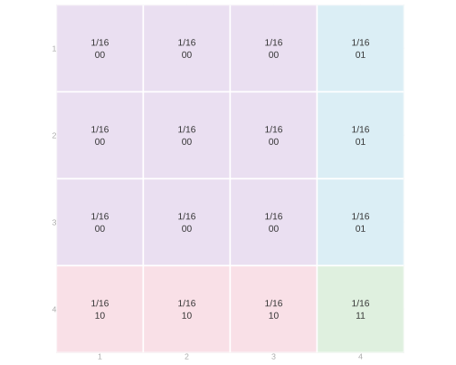
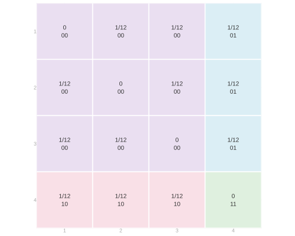
To get the expectation of the total we don’t need its distribution. Multiply each cell’s total by that cell’s probability and add. With replacement every cell has probability 1/16, so reading the left grid row by row, \mathop{\mathrm{E}}[S]=\frac{(0+0+0+1)+(0+0+0+1)+(0+0+0+1)+(1+1+1+2)}{16}=\frac12. Without replacement the diagonal cells are impossible, and each remaining cell has probability 1/12, so reading the right grid row by row, \mathop{\mathrm{E}}[S]=\frac{(0+0+1)+(0+0+1)+(0+0+1)+(1+1+1)}{12}=\frac12.
Now regroup. Each cell’s total is its first response plus its second, so we can add up all the first-response contributions, then all the second-response contributions.
The first-response pass only uses the row totals. With replacement each row has total probability 4/16, so it is \frac{4\cdot0+4\cdot0+4\cdot0+4\cdot1}{16}=\frac14. Without replacement each row has total probability 3/12, so it is \frac{3\cdot0+3\cdot0+3\cdot0+3\cdot1}{12}=\frac14. The second-response pass is the same calculation down the columns. Under either scheme, \mathop{\mathrm{E}}[Y_1+Y_2]=\mathop{\mathrm{E}}[Y_1]+\mathop{\mathrm{E}}[Y_2]=\frac14+\frac14=\frac12.
The row totals are the first call’s marginal distribution. The column totals are the second call’s. So we didn’t need this whole thing, and the part we did need we never needed this for. The same regrouping works for three calls, or n, without drawing the cube.
There are two things going on here. To average a sum of two things, we can take two averages and sum. To average a constant times a random variable, we multiply the random variable’s average by the constant. In other words, we can distribute expectations and can pull constants out of them. For random variables Y and Z and numbers a and b, \mathop{\mathrm{E}}\p*{aY+bZ}=a\mathop{\mathrm{E}}[Y]+b\mathop{\mathrm{E}}[Z]. These rules do not require the two random variables to be independent.
In essence it comes down to the fact that all we’re doing is summing. Expectations are probability-weighted sums, and we’re looking at the expectation of a sum. And we can change the order we sum in without changing what we get. The marginalization step sums along a row or a column of the grid. \begin{aligned} \mathop{\mathrm{E}}\p*{aY+bZ} &\overset{\texttip{\small{\text{?}}}{by definition of expectation}}{=}\sum_y\sum_z(ay+bz)P(Y=y,Z=z)\\ &\overset{\texttip{\small{\text{?}}}{changing the order in which we sum}}{=}\sum_y\sum_z ayP(Y=y,Z=z)+\sum_z\sum_y bzP(Y=y,Z=z)\\ &\overset{\texttip{\small{\text{?}}}{pulling constants out of the inner sums}}{=}\sum_y ay\sum_zP(Y=y,Z=z)+\sum_z bz\sum_yP(Y=y,Z=z)\\ &\overset{\texttip{\small{\text{?}}}{summing to get marginal probabilities from our joint}}{=}\sum_y ayP(Y=y)+\sum_z bzP(Z=z)\\ &\overset{\texttip{\small{\text{?}}}{pulling constants out of the remaining sum}}{=}a\sum_y yP(Y=y)+b\sum_z zP(Z=z)\\ &\overset{\texttip{\small{\text{?}}}{by definition}}{=}a\mathop{\mathrm{E}}[Y]+b\mathop{\mathrm{E}}[Z]. \end{aligned}
Unbiasedness
The margins are free, so the expectation of the sample mean is the population mean under every one of these sampling schemes.
A tool we use here is understanding probability as an expectation. An indicator records whether a condition holds: it is one when the condition holds and zero otherwise. Write 1_{=j}(J_i) for the indicator that call i selects person j, 1_{=j}(J_i)= \begin{cases} 1 & \text{if } J_i=j,\\ 0 & \text{otherwise.} \end{cases} It is a binary random variable, and its probability-weighted average is the probability that it is one, \mathop{\mathrm{E}}[1_{=j}(J_i)] =0P(J_i\ne j)+1P(J_i=j) =P(J_i=j). This is a principle, not a notational trick: probabilities are expectations of indicators. Every rule we prove for expectations is also a tool for probabilities.
For sampling, the possibilities are people. Number the people in a population from 1 to m and write y_1 \ldots y_m for their responses, with population mean \mu=m^{-1}\sum_{j=1}^m y_j. Sampling one person uniformly at random means each person has probability 1/m of being selected, so P(J_i=j)=1/m.
The population in the figure below has 100 people: 40 respond one and 60 respond zero. The figure shows samples of 5, 20, and 80 people under three mechanisms.
- With replacement: select each person uniformly and independently from the whole population.
- Without replacement: select uniformly from the people not yet chosen.
- Random-start cycle: arrange the 40 ones followed by the 60 zeros around a circle. Select a starting person uniformly, then take consecutive people.
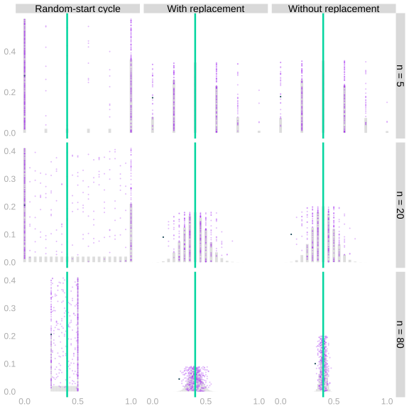
On call i we select person J_i and observe Y_i=y_{J_i}. Exactly one of the selection indicators is one, so this sum picks out the selected person’s value, Y_i=\sum_{j=1}^m y_j1_{=j}(J_i). Linearity and the indicator turn its expectation into the population average, \begin{aligned} \mathop{\mathrm{E}}[Y_i] &\overset{\texttip{\small{\text{?}}}{linearity}}{=}\sum_{j=1}^m y_j\mathop{\mathrm{E}}[1_{=j}(J_i)]\\ &\overset{\texttip{\small{\text{?}}}{probability as expectation}}{=}\sum_{j=1}^m y_jP(J_i=j)\\ &\overset{\texttip{\small{\text{?}}}{uniform sampling}}{=}\frac1m\sum_{j=1}^m y_j\\ &=\mu. \end{aligned}
That holds for every call, under each of the three mechanisms.
The same calculation with any function of the response in place of the response itself gives \mathop{\mathrm{E}}[f(Y_i)]=\frac1m\sum_{j=1}^m f(y_j).
The sample mean of n calls is \hat\mu=n^{-1}\sum_{i=1}^nY_i, and linearity adds the calls up, \begin{aligned} \mathop{\mathrm{E}}\sb*{\frac1n\sum_{i=1}^n Y_i} &\overset{\texttip{\small{\text{?}}}{via linearity}}{=}\frac1n\sum_{i=1}^n \mathop{\mathrm{E}}[Y_i]\\ &\overset{\texttip{\small{\text{?}}}{via uniform sampling}}{=}\frac1n\sum_{i=1}^n \mu\\ &=\frac1n \times n \times \mu = \mu. \end{aligned}
The sample mean is an unbiased estimator of the population mean, under each of the three mechanisms. The blue line is on top of the green line, and we never built the distribution. Lack of independence does not make calculating the expectation of a mean any harder, because linearity of expectation doesn’t require independence.
So it did in fact matter which center. We calibrated to contain a fraction of the distribution around it. But that only works because the estimator is unbiased.
From an expectation to a probability bound
An expectation alone bounds a probability.
Indicators count the observations in an event
Consider the vote histories of a small town. Each dot is a resident, and its value is how many of the last five elections they voted in. The histogram counts these same residents. The blue region selects those who voted in at least four elections. Replace each selected resident’s value by one and each remaining value by zero. Averaging these indicators counts the selected residents and divides by the population size. This is the fraction in the blue region. For a random variable X and a threshold t, write 1_{\ge t}(X) for the indicator that X\ge t. More generally, \mathop{\mathrm{E}}[1_{\ge t}(X)] =0P(X<t)+1P(X\ge t) =P(X\ge t).
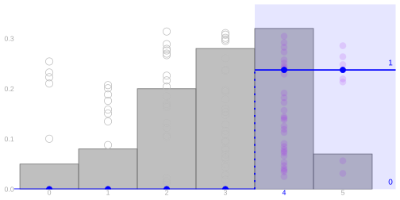
The town has 100 residents; 39 are in the blue region. The average of the indicators is (61\cdot0+39\cdot1)/100.
The blue line is the indicator function: zero below the threshold, one at or above it. The area of each resident’s dot is that indicator value.
Markov’s inequality
Suppose X is nonnegative and t>0. Compare the indicator with the ramp X/t. Below the threshold, the indicator is zero and the ramp is nonnegative. At or above the threshold, the indicator is one and the ramp is at least one. At every possible value, 1_{\ge t}(X)\le\frac Xt. In the picture, dot area represents the function value. Replacing the indicator by the ramp never decreases a dot’s area. The unit of area stays fixed: an indicator value of one and a ramp value of one have the same area.
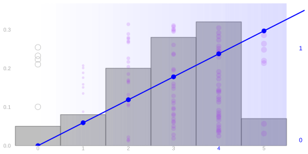
Now replace the indicator by the ramp. Each dot’s area is its value divided by the threshold. Below the threshold, a zero area can only increase. At or above the threshold, the area is at least one. The ramp therefore has an average at least as large as the indicator’s average. Both pictures use the same unit of dot area, so this comparison is visible rather than rescaled away.
An average preserves this comparison. Every probability weight is nonnegative, so a pointwise larger function has an expectation at least as large. This property is called monotonicity. Combining it with our indicator calculation and linearity proves Markov’s inequality: \begin{aligned} P(X\ge t) &=\mathop{\mathrm{E}}[1_{\ge t}(X)]\\ &\le\mathop{\mathrm{E}}[X/t]\\ &=\frac{\mathop{\mathrm{E}}[X]}t. \end{aligned}
Markov’s inequality needs two things: that the random variable is nonnegative, and its expectation. It does not care where the expectation sits. Here are three populations. In each, the purple dots are the values, the gray bars count them, and the green line marks the expectation.
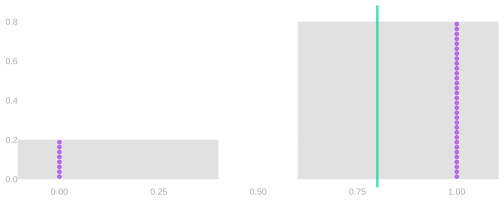
In the first, the expectation is in the middle of the bump, where many values are. In the second, every value is zero or one, and the expectation is between them, where no value is. In the third, the expectation is between the two bumps. In all three, Markov’s bound on P(X\ge t) is \mathop{\mathrm{E}}[X]/t. The same expectation, the same bound, whether or not a draw ever lands there.
What Markov misses about a sample mean
Can we use Markov to calibrate an interval for a population mean? Consider a binary response with population frequency \theta and sample frequency \hat\theta, using uniform sampling as above. We know \mathop{\mathrm{E}}[\hat\theta]=\theta, and \hat\theta is nonnegative, so Markov applies to it. Taking the threshold t=20\theta, P(\hat\theta\ge20\theta)\le\frac{\theta}{20\theta}=0.05. So with probability at least 95\%, our sample frequency is below 20\theta. That is a statement about \hat\theta, which we observe; it rearranges into one about \theta, which we do not. \theta\ge0.05\hat\theta \qqtext{ with probability at least } 95\% If our observed frequency is 0.7, we learn that \theta\ge0.035. A frequency cannot exceed one, so our guaranteed 95\% interval is [0.035,1]. We have ruled out almost nothing.
One side is all Markov can give us. It bounds the probability of landing far above the mean and says nothing about landing far below, so it supplies a lower bound on \theta and no upper bound at all.
That is less of a limitation than it sounds, because plenty of the questions we actually have are one-sided. How low could turnout really be, given what we saw? How bad might this be for us? Those never needed an upper bound. So the fair comparison is not against a two-sided interval but against a one-sided bound built the way our earlier ones were, from the binomial model with its frequency set to \hat\theta: take the 95th percentile of the error \hat\theta-\theta under that model and subtract it from our estimate.
Those calibrated bounds narrow as the sample grows. The Markov bound above does not: the expectation of the sample frequency remains \theta for every sample size.
The panels show the same construction for three sample sizes. Each purple dot is a sample frequency. For one highlighted sample, the bootstrap/binomial bound is pink and the dark one is Markov’s. Both are one-sided, so both run to the right edge; what differs is where each one starts. The green line is the population frequency, and both use the same sample.
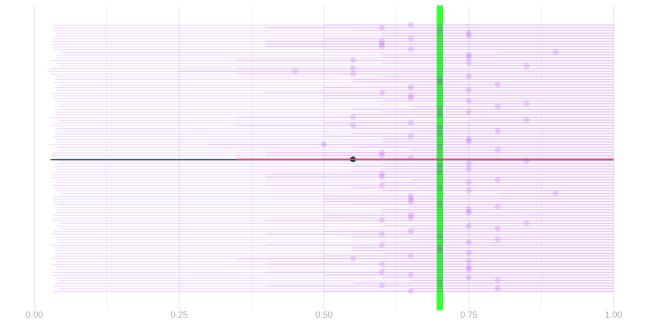
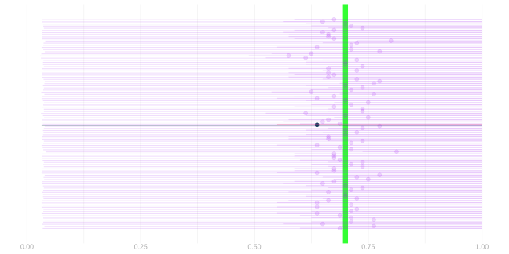
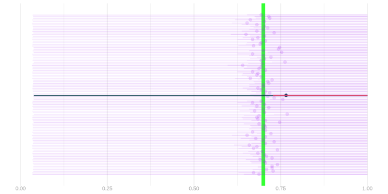
The Markov guarantee is valid without knowing the full sampling distribution, and even without independence. The bootstrap/binomial calibration uses more information and is much more informative here; its plug-in calibration is not itself a distribution-free guarantee. Our one-sided bound says that \theta is not much smaller than what we observed, and nothing at all about its being much larger.
To get both sides out of Markov we would have to apply it to a quantity that is large whenever our error is large in either direction. Squared error is such a quantity, and its mean is the subject of the next chapter.